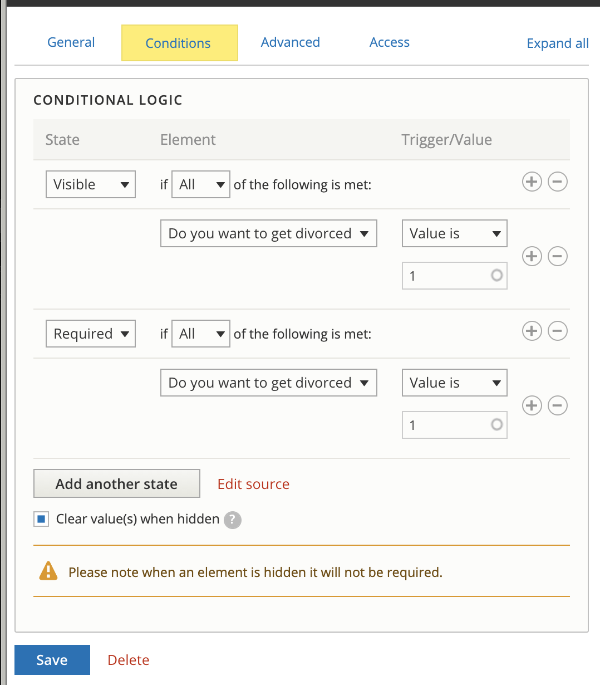

Managing Triage Rules¶
Triage rules have two parts:
- Triage rule node (this is the content that a webform is attached to). The triage rule node
- An associated webform
Organization Managers can access these two lists of pages from their dashboard:

Triage Rules Content Type¶
The triage rule content type is where you can set:
- Title for the triage rule content
- The service(s) the triage rules apply to
- The legal issues the triage rules apply to.
- The webform to associate with the triage rules. This must be added AFTER the webform triage rules has been created. This should always be set to open.
- The group audience should be the organization.
To edit your triage rule content:
- Pick edit node from the drop down. The settings for “relation” attach the content (node) to the organization.
- Update the edit form
- Press “Save (this translation)”
Note
Use caution when selecting legal issues for a service. If multiple triage rules exist for the same service, the system will randomly pick which one to use.
Triage Rules Webform¶
We use webforms to power our triage rules. On the webform list, you will see the webforms you have access to. You can filter the list by name or element (for example, if you wanted to see all webforms that have a phone end point, you could filter on phone_end)
There are several available operations from this report:
- Build - this is where you can edit your triage rule form
- View - this allows you to view what users see. There are style differences between this and the OTIS pages. Also, this will not lead you to referrals or intake.
- Test - this allows you to test the webform without actually submitting data
- Results - this will allow you to see triage submissions. This is not tied to OTIS data but does provide a way to see triage rule only submissions.
Building a webform¶
Note
For complex logic, please work with Mike Rush to create this. The webform interface is limited to simple AND/OR conditional logic. If you need more complex logic (such as X AND (Y OR Z)), ILAO will need to hand-code that logic and the webform will not be editable via the built-in user interface.
On the build form, you will see a list of existing elements (if this is an existing webform). These can be re-ordered using the drag and drop as needed.
If you click “Add element,” you will see a long list of elements. For triage rules please limit yourself to the following elements:
- checkbox
- text field
- radios (under option elements)
- hidden
- advanced HTML/text (under markup elements)
Radio Example¶

Textfield Example¶

Conditions¶
The conditions apply generally across the different types.
The two condition states we typically need to use are:
- Visible: when the condition is met, the form element will be visible.
- Required: when the condition is met, the form element will be required.
Types of conditions:
- Checked and unchecked: Use these to test whether a radio or checkbox element has any value (checked) or if no selection has been made (unchecked).
- Empty and filled: Use these to test whether a textfield has been filled out or not.
- Value is/Value is not: use for radio buttons and checkboxes to specify the specific value(s) to check for.
Be sure to check Clear value(s) when hidden to prevent default data being captured and transferred.